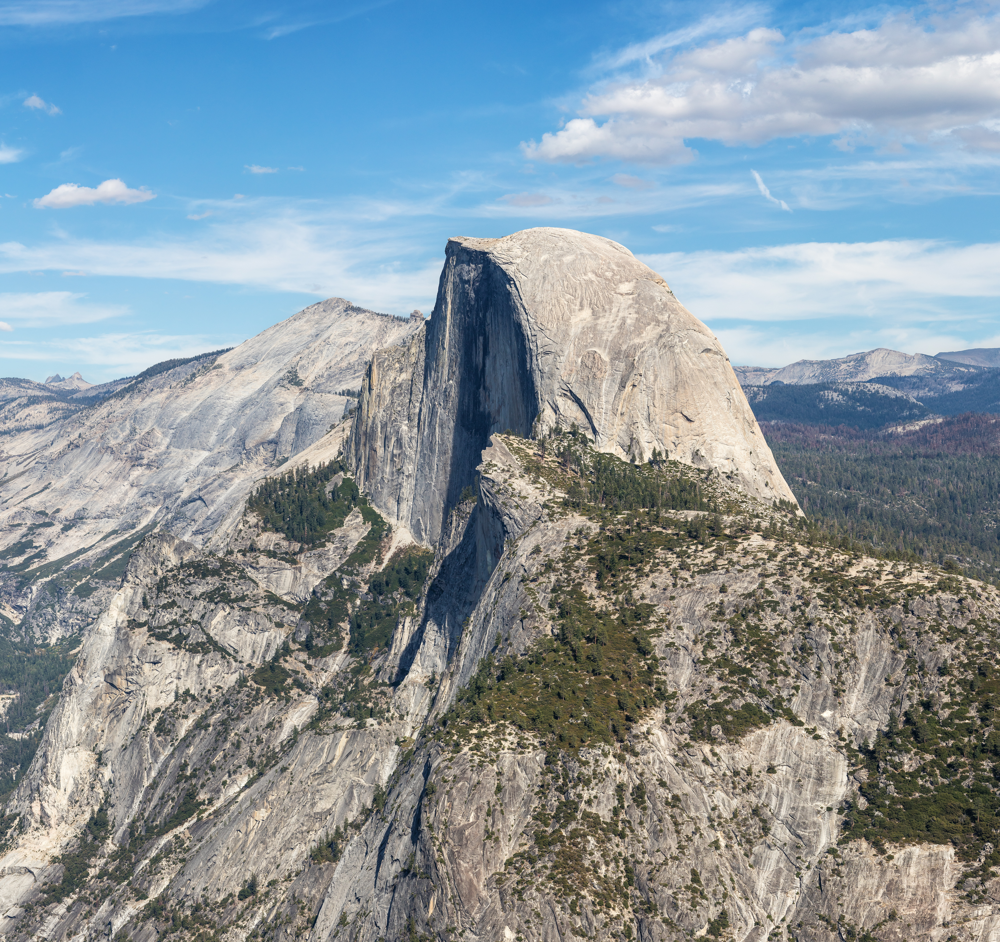
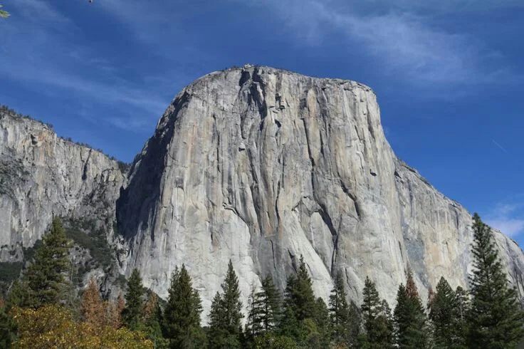
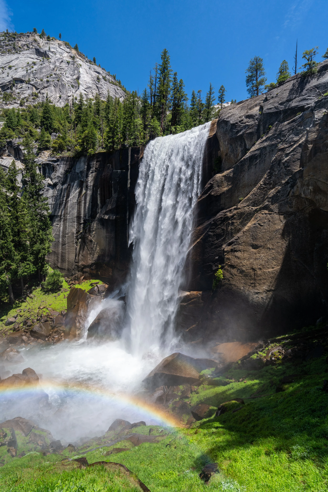

About Yosemite
Yosemite is located in California near Nevada and it takes up almost 1,200 square miles of land. The park was established in 1890 and it is known for many things such as its gigantic cliffs, famous landmarks Half Dome and El Capitan. The park also has a vast wildlife ranging from all the way down to rabbits to all the way up to deer and bears.
Yosemite Photo Gallery



Popular Attractions
Half Dome
Half dome is one of the staples of the park, it is entirely made of granite and it can be seen throughout the park. While you can hike it, you are required to get a permit to hike it when the cables are installed from the times from the Friday before memorial Day to the Tuesday after Columbus Day.
El Capitan
El Capitan is one of the most well knaow parts of the part for its massive rock face that is almost completely vertical. Rock climbers will come here to try and tackle this accomplishment.
Mist Trail
The Mist trail another one of the most popular hiking spots throughout the park. It is know for the waterfall that flows right down past the trail. The best time to go see this attraction is a peak snow melt, when the snow is melting there is significantly more water that flows down.
Things to Do
- Hiking on the numerous amount of trails that the park has in store for visitors
- Camping in the parks designated campgrounds (which usually require a reservation)
- Rock climbing is one of the more popular things to do while in Yosemite due to the famous cliff El Capitan
- Sigh seeing is one of the most predominant reasons that people trvale from all over the world to see this beautiful park for all that it holds